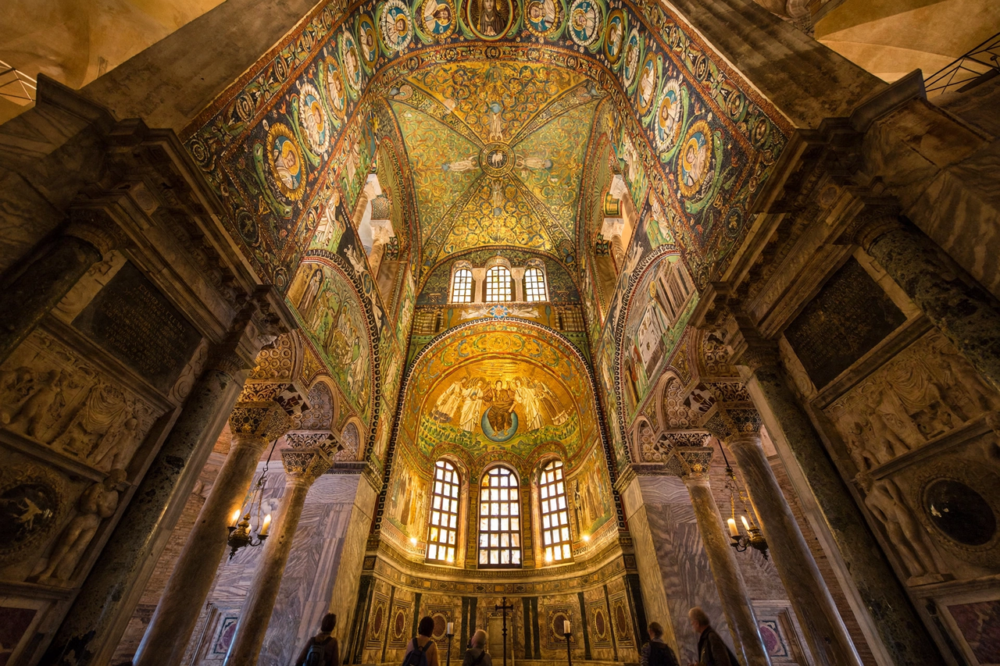

| Basilica of San Vitale | |
|---|---|
| Location | Ravenna, Emilia-Romagna, Italy |
| Construction | begun 526/527; consecrated 547 |
| Patron | Bishop Ecclesius; financed by Julius Argentarius |
| Style | Early Byzantine |
| Famous for | Mosaics of Justinian I and Theodora |
| Status | UNESCO World Heritage Site (1996) |

The Basilica of San Vitale is a late antique church in Ravenna, Italy, and one of the most important surviving monuments of early Byzantine art and architecture in western Europe. Begun under Ostrogothic rule in 526 or 527 and consecrated in 547, after Ravenna had been reconquered for the Emperor Justinian I, the church is famed for its octagonal central plan and for the richest surviving programme of Byzantine mosaics outside Constantinople — including the celebrated panels of Justinian and the Empress Theodora in the apse. It is one of the eight structures in Ravenna inscribed on the UNESCO World Heritage List in 1996.
The church was begun by Bishop Ecclesius after his return from Constantinople in 525/526, on the site associated with the martyrdom of Saint Vitalis. Its construction was financed by the banker Julius Argentarius (Giuliano Argentario), at a reported cost of 26,000 gold solidi. Work continued under Bishops Ursicinus and Victor and was completed under Archbishop Maximian, who consecrated it on 19 April 547. Unusually, the building thus began under the Arian Ostrogothic kingdom of Theoderic's successors and was finished as a monument of orthodox imperial rule — its mosaic programme proclaiming, in the reconquered exarchate capital, the unity of imperial and divine authority. A Benedictine monastery was attached in the tenth century; the church later passed through various hands and is now a museum-monument still occasionally used for worship and concerts.
San Vitale consists of a tall central octagon surrounded by a two-storey ambulatory and galleries, surmounted by a dome built of hollow terracotta tubes (tubi fittili) to reduce weight — a characteristically Ravennate technique. Eight piers define the centre; semicircular niches between them open the space diagonally, creating the dematerialised, light-filled interior characteristic of Justinianic architecture, contemporary with Hagia Sophia in Constantinople (begun 532). To the east, a deep apse flanked by two chapels (prothesis and diaconicon) projects from the octagon; to the west, an off-axis narthex and twin stair towers complicate the approach, partly because of pre-existing structures on the site.
The sanctuary mosaics, executed around 546–548, are the basilica's glory. In the apse semi-dome, a youthful Christ sits enthroned on the blue orb of the world, handing a crown to Saint Vitalis while Bishop Ecclesius offers a model of the church. Below, on facing walls, the two imperial panels: Justinian, haloed, flanked by clergy (including Archbishop Maximian, identified by inscription) and soldiers, bearing a paten; and Theodora, crowned and jewelled, with her court ladies, bearing a chalice, the three Magi embroidered on her hem. Neither emperor nor empress ever visited Ravenna; the panels are assertions of presence in art. The vault mosaics show the Lamb of God supported by four angels, and flanking scenes depict Old Testament types of the Eucharist — Abraham offering Isaac and entertaining the angels, Abel and Melchizedek at an altar, Moses, and the prophets Isaiah and Jeremiah — a theological programme in gold and green that art historians regard as the supreme achievement of early Byzantine monumental painting in mosaic.
San Vitale's centralised plan influenced the Palatine Chapel at Aachen built for Charlemagne (begun c. 792), whose architect Odo of Metz adapted its octagon and gallery, signalling Carolingian claims to imperial succession. The church remains the paradigm case in surveys of Byzantine architecture in the West.